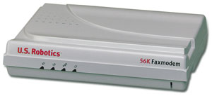

Галина Большова
По оценкам американских аналитиков, в ближайшие четыре года 55% пользователей Интернета в США будут использовать для доступа в сеть "старые добрые" модемы. И это несмотря на ожидаемый рост популярности таких высокоскоростных методов доступа в Интернет, как ADSL, радиомодемы стандартов 802.11a и 802.11b, системы кабельного ТВ, спутниковая связь. Но если так обстоят дела в США, то, очевидно, у нас, в России, традиционный модем еще долго будет сохранять доминирующие позиции на рынке домашних пользователей. Известно, как медленно "движется" у нас модернизация сетей общего пользования и внедрение ADSL-устройств, насколько высоки (при низких доходах населения) цены на эти и другие виды услуг высокоскоростного доступа.
Если рассматривать технологию, используемую в аналоговых модемах связи, то фактически для применяемого сегодня метода модуляции стандарт V.90 - последний "в роду". На нем достигнут физический предел скорости передачи - 56,6 кбит/c. Передача данных по стандартным телефонным каналам связи с помощью модемов - это вообще единственный вид телекоммуникаций, где достигнут теоретический предел по пропускной способности.
Тем не менее новые модемные протоколы для аналоговых линий продолжают появляться, и это лишний раз доказывает, что возможности модемного сервиса еще не исчерпаны. Да и производители таких устройств отнюдь не собираются "хоронить" свой бизнес. Одно из явных свидетельств тому - утверждение в ноябре 2000 г. "Рекомендации ITU-T V.92", которая стала естественным развитием "Рекомендации ITU-T V.90".
Сегодня основные разработчики модемов (U.S.Robotics, ZyXEL, InРro и т. д.) предлагают пользователям реализовать данные рекомендации при помощи обновления для своего устройства стандарта V.90 или же приобрести новый модем с поддержкой протокола V.92 - по цене немногим более 100 долл.
Заметим, однако, что большая часть усовершенствований V.92 относительно V.90 работает "в паре" с модемом провайдера. Известно, что, например, U.S. Robotics успешно провела тестирование своего нового модема стандарта V.92 и его взаимодействия с серверным оборудованием ведущих фирм, а такие производители серверных модемов, как Cisco, CommWorks, Lucent и Texas Instruments, уже отчасти внедрили технологию V.92 в свои устройства.
Технические подробности
По основным функциям, которые связаны с передачей данных, модем, поддерживающий протокол V.92, ничем не отличается от модема стандарта V.90, например, наиболее популярной "в народе" модели U.S. Robotics Courier - Courier V.92 External Fax/Modem. (Кстати, базовое ПО модели Courier разработано бывшим советским программистом Владимиром Парижским, работавшим тогда в этой компании.) Courier - модем универсального класса: он может устанавливаться и на выделенные, и на коммутируемые линии, демонстрируя высокие скоростные показатели работы на каналах разного качества.
|  | Модем Courier V.92 External Fax/Modem производства U.S. Robotics.
|
Главное отличие стандарта V.92 от его предшественника - большая симметрия скоростей передачи в прямом (upstream) и обратном (downstream) каналах. Технология V.90 обеспечивает обмен данными с достаточно различающимися скоростями в прямом и обратном направлениях соответственно - 33,6 и 56 Кбит/с. И другого при использовании метода модуляции QAM для upstream ожидать нельзя, поскольку любое возможное повышение скорости приводит к росту отношения средней мощности к пиковой и увеличению загрузки канала. Напомним, что именно поэтому FCC ограничила скорость в прямом канале значением 31,2 кбит/c. Спецификации V.92 используют не детально отработанную и привычную квадратурную амплитудную (Quadrature Amplitude Modulation, QAM), а импульсно-кодовую модуляцию (Pulse Code Modulation, PCM), благодаря чему и удалось достичь существенного повышения скорости в прямом канале - до 48 кбит/с. Не вдаваясь в детали метода передачи upstream, хотелось бы отметить, что сейчас он аналогичен примененному в канале downstream ("к абоненту"). Кроме того, специальное ПО позволяет несколько уменьшить скорость передачи downstream, сбалансировав тем самым значения скоростей прямого и обратного направлений связи так, чтобы достичь максимально комфортных для пользователей параметров при интерактивной видеоконференц-связи или IP-телефонии.
Почему это главное преимущество, спросите вы, если известно, что при обычной работе в Интернете объем запросной информации в 5-10 раз меньше получаемой из Сети. Надо ли повышать скорость? Для традиционного "серфинга" - не надо, но если вы используете IP-телефонию или с помощью модемов создаете небольшую корпоративную сеть, то данное качество просто необходимо. Очевидно, что и беседа абонентов, и обмен данными в подобной сети должны происходить при близких скоростях.
К сожалению, несмотря на полное одобрение стандарта поставщиками серверных модемов, этот механизм передачи в канале "от абонента" - upstream пока не поддерживает в своих модемах ни одна фирма, производящая узлы доступа, хотя... все обещают. Остается надеяться на скорое выполнение этих обещаний.
Второе, не менее важное свойство V.92 - более быстрое соединение (Quick Connect). Задержки при соединении, порождаемые так называемой сессией настройкикоторая происходит всякий раз при установке связи, значительно сократились. Модем, поддерживающий V.92, "помнит" условия соединения и сверяет их с текущими при каждом установлении связи. В модели U.S.Robotics 56K Faxmodem (как, впрочем, в моделях всех фирм стандарта V.92) эта функция реализована как переключаемая, т. е. существует возможность выбора: использовать полный цикл вхождения в связь, частичный или существенно укороченный. При укороченном цикле используются параметры канала и модемов провайдера и клиента из предыдущего сеанса, что сокращает время настройки на 30-50%. Очевидно, что наиболее существенный выигрыш получат домашние пользователи, подключающиеся к Интернету через одного и того же провайдера и по одной и той же трассе межстанционных каналов связи.
Тем не менее пока, по свидетельству специалистов компании RRC, влияния данной функции на уменьшение времени установления соединения на российских телефонных каналах заметить не удалось.
Поддержка телефонной связи с сохранением возможности быстрого восстановления прерванного сеанса передачи данных (например, сеанса работы в Интернете) - пожалуй, наиболее приятное новшество в V.92. Прекращение сеанса связи во время работы с Интернетом при телефонном звонке абоненту (если современная электронная АТС абонента обеспечивает такой звонок, называемый звонком вмешательства, или вторичным звонком) - наиболее характерная особенность прежних протоколов. Такой звонок модем абонента воспринимал как поток помех и отключался от линии. При этом ранее не существовало способов узнать, кто позвонил вам в это время, а уж о смене вида соединения в процессе работы и мечтать не приходилось. Теперь почти все эти проблемы в прошлом.
Современная электронная телефонная станция позволяет передать вторичный звонок на вход модема абонента в виде специального сигнала стандартной сигнализации ожидания (Call Waiting) и сообщить ему номер вызывающего абонента. При получении такого сигнала обычный модем разрывает соединение. Модем же протокола V.92 принимает его, интерпретирует как вызов и сообщает пользователю в окне экрана ПК, что пришел вторичный звонок. Абоненту дается время, в течение которого он может решить: ответить на звонок или отказаться от вызова. Если пользователь желает прервать текущий сеанс связи с Интернетом и ответить на звонок, то АТС абонента и АТС провайдера связи начинают удержание связи (сохраняя информацию о предыдущем подключении), разорвав соединение с домашним модемом. Модемы (как провайдера, так и пользователя) при этом переходят в режим ожидания (Modem on Hold). После окончания разговора соединение восстанавливается, если временной лимит, определяемый Интернет-провайдером на время удержания, не истек.
Единственное ограничение (существенное в российских условиях) - местный провайдер телефонной связи должен предоставлять услугу Call Waiting и определения номера, а пользователь - быть подписан на нее. В нашей стране (в отличие от многих других стран мира) на экране появится только одно слово: звонок. Причина недоступности определения номера абонента таится в применяемых в России АТС и отечественной реализации функции АОН, абсолютно отличной от метода определения номера, применяемого за границей. И интегрировать наш способ АОН в стандарт V.92, чтобы получить не только информацию о наличии вызова, но и узнать, кто тебе звонил, практически невозможно, поскольку функциональность V.92 этого не предусматривает.
Правда, некоторые телефонные станции (не отечественного производства со встроенной функцией определения номера), установленные на территории Российской Федерации, в нарушение российского стандарта по методологии АОНа, способны выдать информацию о том, кто звонит. Однако, чтобы ее получить, надо иметь связь не только со станцией, куда пришел звонок, но и с той станцией, откуда он поступил. А если последняя (или хотя бы одна в цепочке связи) не обладает данной функцией, то получить информацию о номере звонящего нельзя. Поэтому в России данная функция будет совершенно "слепой".
Адаптировано для России
По мнению одного из ведущих специалистов в области теории и техники модемов, Эдуарда Минкина, "...для российских каналов связи доселе никто никаких модемов по-настоящему не адаптировал. Потому что адаптация модема требует очень серьезной аналитической работы, напрямую не определяемой программным обеспечением, а связанной с пониманием и правильной интерпретацией физических процессов, происходящих в каналах связи. Поскольку каналы в России не очень хороши и весьма разнообразны, то исторически сложилось так, что в эти годы все говорили об адаптации, но по сути настоящей адаптации ни одной из фирм сделано не было. Именно поэтому российские пользователи таких "адаптированных" модемов при работе в Интернете до сих пор страдают от невозможности порой установить сеанс связи, от частых разрывов связи и невысоких (несмотря на все заявления производителя) скоростей соединения".
Вообще говоря, компания RRC (http://www.rrc.ru), основной дистрибьютор модемов U.S. Robotics в России, по словам ее специалистов, лет 5-6 назад "пыталась склонить" своих партнеров к определенной модернизации изделий, но наталкивалась на скрытое сопротивление. Очевидно, что причиной тому был недостаточный в то время (по их меркам) объем продаж в нашей стране. Однако в последние годы картина существенно изменилась. И дело не только в том, что объемы продаж модемов в России стали намного выше, но и в том, что пользователи развитых стран мира постепенно переходят от модемных технологий к более скоростным. Правда, до окончательного отказа от модемов еще далеко и там.
Все это время RRC в содружестве с Центральным научно-исследовательским институтом связи (ЦНИИС) проводила испытания каналов и тестирование модемов, пытаясь определить, в каких основных характеристиках зарубежных устройств не учтены особенности наших отечественных систем телефонной связи, и как-то исправить положение. Особого успеха эти усилия не имели, так как зарубежные партнеры RRC не очень прислушивались к мнению специалистов в России. Лед тронулся года полтора назад, когда у надежных и хорошо зарекомендовавших себя модемов Courier неожиданно возрос процент отказов, причем касалось это новой разработки (модель 3453 на 56К, выпускаемая с 2000 г.), где в целях унификации было применено новое единое схемотехническое решение, значительно снизившее себестоимость продукции. Адаптация для конкретной страны в этой модели достигается только программным способом. В предыдущих моделях узел интерфейса с линией связи был "персонифицирован" чуть ли не для каждой страны мира.
Однако причина оказалась не в модеме, а в отсутствии тривиального заземления в подавляющем большинстве российских квартир и зданий. Тем не менее по настоянию RRC специалисты U.S.Robotics доработали эту модель. Сегодня для России серийно выпускается изделие со специальной дополнительной аппаратной защитой. Кроме того, для этой же модели было улучшено взаимодействие с АТС. Но скоростных показателей модемов ни одна из доработок не коснулась.
Здесь нельзя не отметить один факт. Специалисты RRC не только инициируют подобные доработки, но и выявляют "некорректности" параметров линии связи, указывая своим зарубежным партнерам, что следует предпринять для нормальной работы модема. В RRC определяют и задачи, которые надо решать, выполняя роль аналитиков, поскольку возникающие сложности связаны не с ПО как таковым, а обусловлены физикой взаимодействия "плохой" линии и "хорошего" модема. В то же время нужно подчеркнуть, что в силу закрытости и изделия в целом, и особенно встроенного ПО, конкретные изменения в продукт вносят только программисты U.S. Robotics. Хотя при сертификации изделия (а это обычно инициирует компания RRC) можно потребовать предоставления схемотехнического решения и получить его, но исходные коды ПО компания раскрывать отказывается.
Недавно специалисты U.S. Robotics в очередной раз приехали в нашу страну по приглашению RRC, чтобы на собственном опыте убедиться... в плохом качестве наших линий связи. После проведения цикла испытаний компания-производитель наконец-то приняла решение о специальной адаптации своих изделий для российских условий связи. Американские программисты выполнили ряд работ, связанных с улучшением взаимодействия с линиями связи.
Кроме того, сотрудники RRC и U.S. Robotics провели дополнительные испытания модемов, которые выявили большую нестационарность линии (т. е. временные изменения характеристик каналов в течение случайных значений промежутков времени). При этом наблюдалось повышение уровня шума и иное его распределение по сравнению с "западными" линиями связи: высокий уровень шумов в области обычного низкочастотного участка диапазона. И хотя на этих участках информация по сути не передается, увеличение шумов влияет на качественные показатели связи. В модемах некоторых типов и моделей (например, в старых изделиях U.S. Robotics) этот участок отсекается за счет применяемого схемотехнического решения. В изделиях же, выполненных на элементной базе Connexant, в сигнале присутствует низкочастотная помеха. В настоящее время специалисты U.S. Robotics и Connexant пытаются нивелировать ее влияние, вызывающее неустойчивую связь. Хочется надеяться, что вскоре и эта доработка будет завершена.
***
Сегодня один из ведущих производителей модемов - компания U.S. Robotics - поставляет на российский рынок известную модель 56К Fax/Modem (новая версия Sportster), которая поддерживает стандарт V.92. Заканчивается бета-тестирование V.92 для знаменитого Courier (версия 3453) и популярного 56K Message Modem (версия 5668-01). Последний, помимо обычных функций, позволяет принимать факсы и голосовые сообщения при выключенном компьютере. Важно, что наконец-то началась реальная адаптация модемов U.S. Robotics к российским линиям связи. Первые результаты уже получены. Так, на обычном (но удовлетворительного качества) канале в российских условиях специалистам RRC и U.S. Robotics удалось достичь на модемах типа Courier (версия 3453) скорости передачи 54,666 кбит/c (напомним, предельная теоретическая скорость - 56 кбит/с). Существенно улучшена работа модели 56К Fax/Modem.
| Модем 56K Fax/Modem производства U.S. Robotics.
|
Имеющейся в стандарте V.92 функцией "телефонная связь с сохранением быстрого восстановления прерванного Интернет-соединения" с определением номера вызывающего абонента, по сообщениям специалистов RRC, заинтересовались Интернет -провайдеры Калуги и Томска, имеющие свои цифровые сети и современные телефонные станции. Они уже организовали данный сервис для своих клиентов.
Компания RRC намерена и дальше исследовать, как организованы новые возможности V.92 в различных моделях модемов U.S.Robotics, чтобы обеспечить высокое качество сеансов связи их пользователям и реализовать все потенциальные возможности нового стандарта.